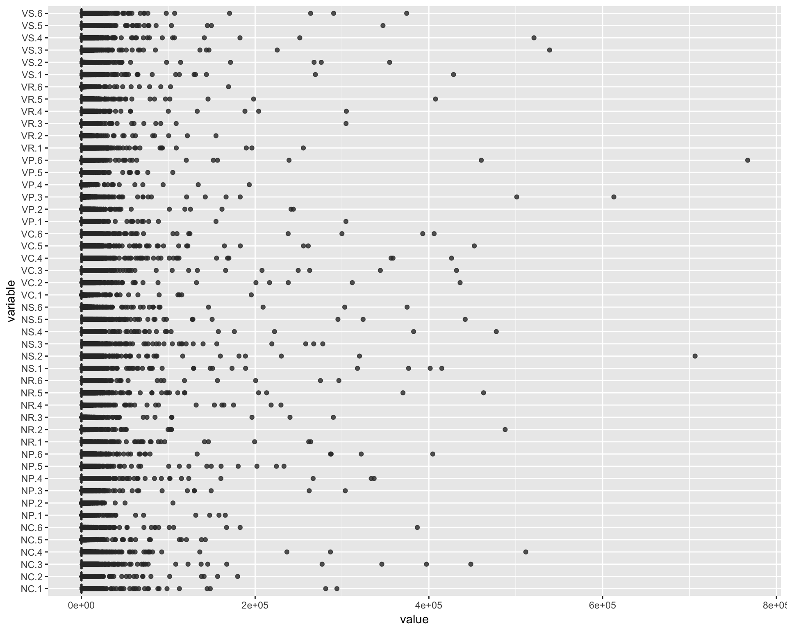
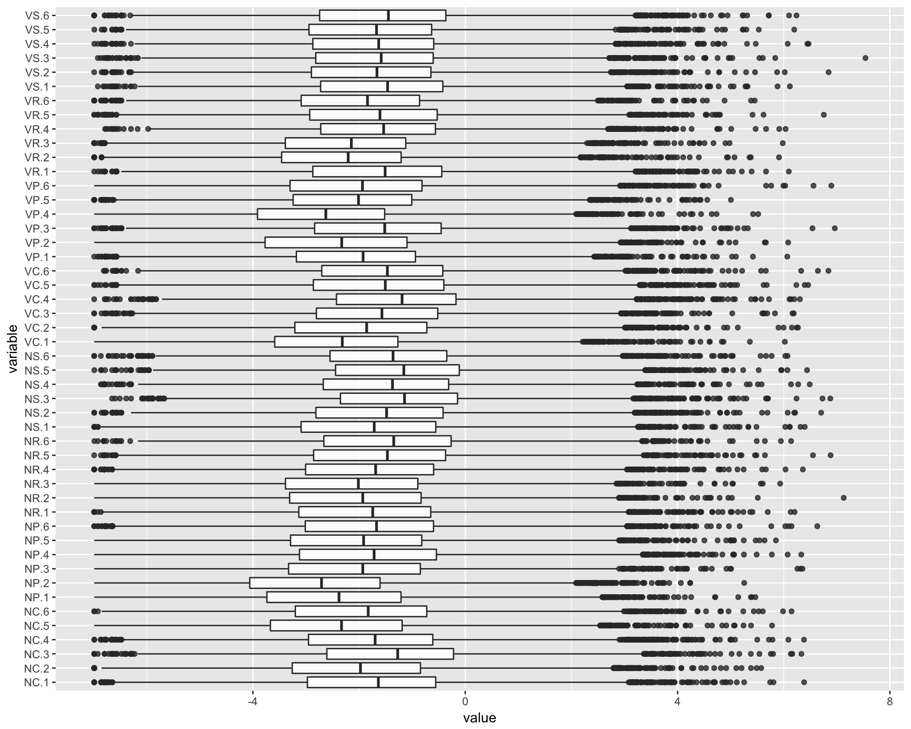
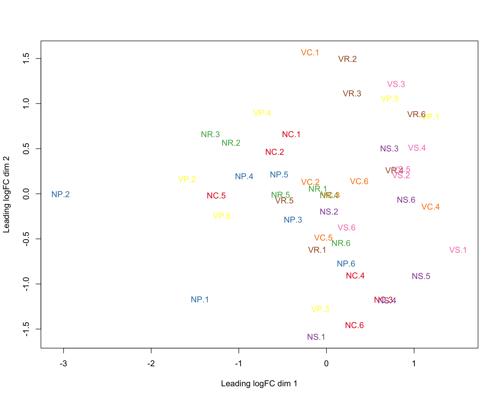
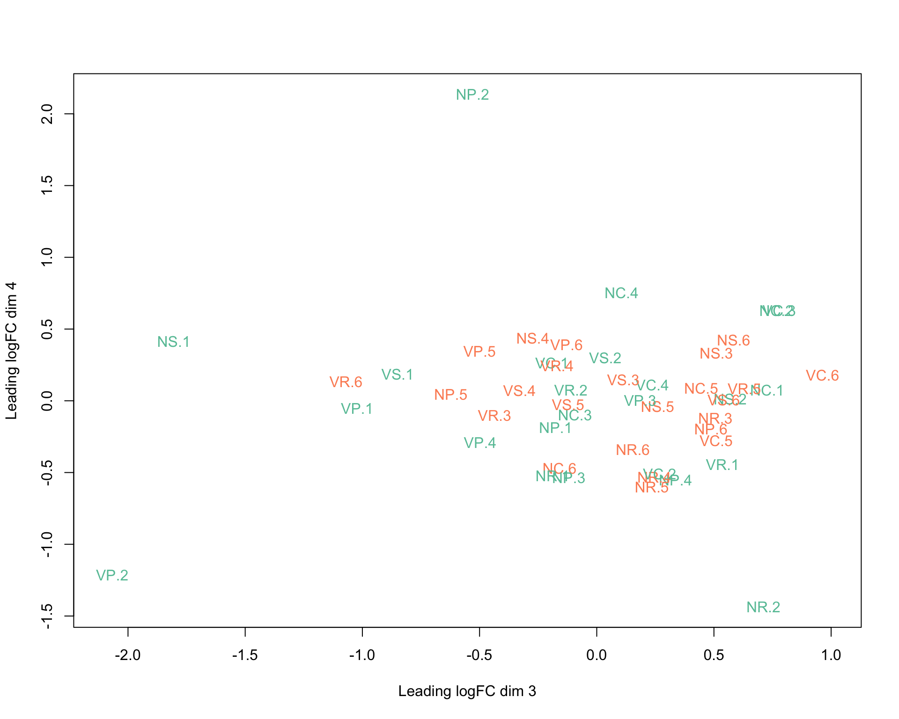
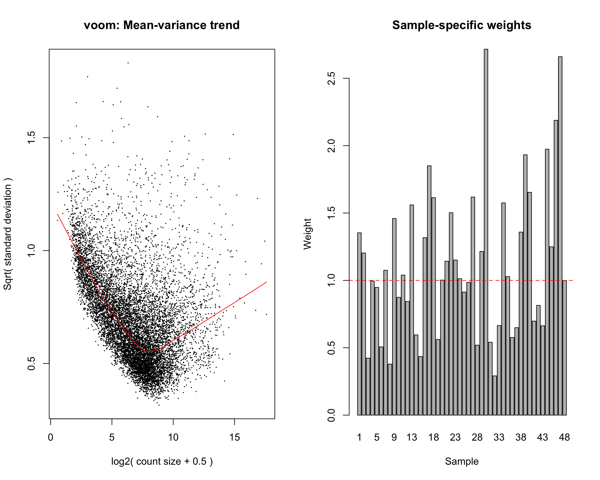
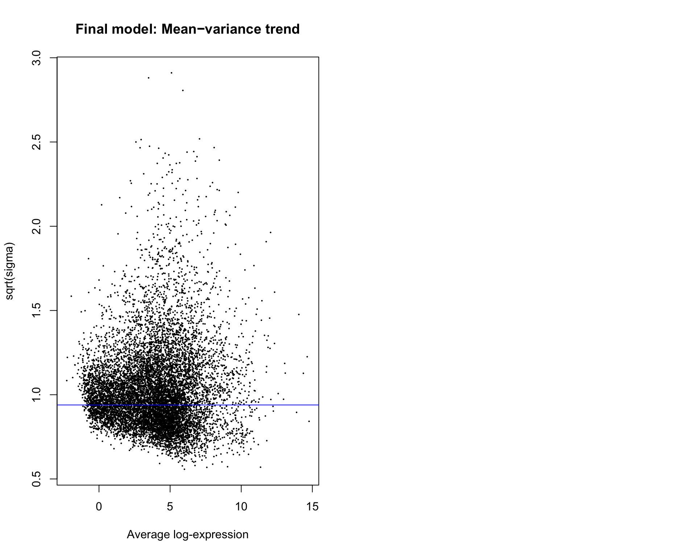

This script tries to take into account possible extraneous variables, following advice given on https://support.bioconductor.org/p/97987/. Particularly, the advice: “You can provide some protection by setting robust=TRUE in eBayes to avoid shrinkage of large variances. You can also replace voom with voomWithQualityWeights to downweight low-quality samples.”
Here, I use voomWithQualityWeights and set robust=FALSE in eBays.
library(limma)
library(Glimma)
library(GGally)
library(ggplot2)
library(edgeR)
library(dplyr)
Attaching package: 'dplyr'The following object is masked from 'package:GGally':
nasaThe following objects are masked from 'package:stats':
filter, lagThe following objects are masked from 'package:base':
intersect, setdiff, setequal, unionthisPath <- "/Users/lindz/bigPint"
beeCounts <- read.delim(file=paste0(thisPath, "/AllLaneCount.txt"), row.names=1, stringsAsFactors = FALSE)
colnames(beeCounts) <- c("NC.1", "NC.2", "NR.1", "VR.1", "NS.1", "VP.1", "NS.2", "VR.2", "NP.1", "VP.2", "VC.1", "NP.2", "VP.3", "NP.3", "VS.1", "VS.2", "VC.2", "NC.3", "VP.4", "NC.4", "NR.2", "VC.3", "VC.4", "NP.4", "VR.3", "NC.5", "VS.3", "NP.5", "VC.5", "VS.4", "NS.3", "VS.5", "VP.5", "NR.3", "NR.4", "VC.6", "NS.4", "NC.6", "NP.6", "VR.4", "NR.5", "NR.6", "NS.5", "VP.6", "NS.6", "VR.5", "VR.6", "VS.6")
beeCounts <- beeCounts[ , order(names(beeCounts))]
x <- DGEList(counts=beeCounts)
#samplenames <- substring(colnames(x), 12, nchar(colnames(x)))
#colnames(x) <- samplenames
group <- as.factor(colnames(x))
group <- factor(c(rep("NC",6), rep("NP",6), rep("NR",6), rep("NS",6), rep("VC",6), rep("VP",6), rep("VR",6), rep("VS",6)))
x$samples$group <- group
lane <- as.factor(c("L12","L12","L12","L12","L34","L34","L12","L12","L12","L12","L34","L34","L12","L12","L34","L34","L34","L34","L12","L12","L34","L34","L34","L34","L12","L12","L12","L12","L34","L34","L12","L12","L12","L12","L34","L34","L12","L12","L34","L34","L34","L34","L12","L12","L34","L34","L34","L34"))
x$samples$lane <- laneTransform and remove low counts.
cpm <- cpm(x)
keep.exprs <- rowSums(cpm>1)>=8 # tried filtering up to 24 and not much difference
x <- x[keep.exprs,, keep.lib.sizes=FALSE] # 15,314 to 10,626
dim(x)[1] 10626 48x <- calcNormFactors(x, method = "TMM")Make boxplots
ggparcoord(data.frame(x[[1]]), columns=1:48, alphaLines=0, boxplot=TRUE, scale="globalminmax") + coord_flip()
ggparcoord(data.frame(log(x[[1]]/colMeans(x[[1]]))), columns=1:48, alphaLines=0, boxplot=TRUE, scale="globalminmax") + coord_flip()Warning: Removed 2179 rows containing non-finite values (stat_boxplot).
Create MDS plots
library(RColorBrewer)
lcpm <- cpm(x, log=TRUE)
par(mfrow=c(1,2))
col.group <- group
levels(col.group) <- brewer.pal(nlevels(col.group), "Set1")
col.group <- as.character(col.group)
col.lane <- lane
levels(col.lane) <- brewer.pal(nlevels(col.lane), "Set2")Warning in brewer.pal(nlevels(col.lane), "Set2"): minimal value for n is 3, returning requested palette with 3 different levelscol.lane <- as.character(col.lane)plotMDS(lcpm, labels=colnames(lcpm), col=col.group)
plotMDS(lcpm, labels=colnames(lcpm), col=col.lane, dim=c(3,4))
glMDSPlot(lcpm, labels=paste(group, lane, colnames(lcpm), sep="_"), groups=x$samples[,c(1,4)], launch=FALSE)Create design matrix. There are many ways to setup a design matrix. Here, we removed the intercept from group (the first factor), but kept the intercept from lane. This allows us to do contrasts with group more easily.
design <- model.matrix(~0+group+lane)
colnames(design) <- gsub("group", "", colnames(design))
contr.matrix <- makeContrasts(
NCvsNP = NC-NP,
NCvsNR = NC-NR,
NCvsNS = NC-NS,
NCvsVC = NC-VC,
NCvsVP = NC-VP,
NCvsVR = NC-VR,
NCvsVS = NC-VS,
NPvsNR = NP-NR,
NPvsNS = NP-NS,
NPvsVC = NP-VC,
NPvsVP = NP-VP,
NPvsVR = NP-VR,
NPvsVS = NP-VS,
NRvsNS = NR-NS,
NRvsVC = NR-VC,
NRvsVP = NR-VP,
NRvsVR = NR-VR,
NRvsVS = NR-VS,
NSvsVC = NS-VC,
NSvsVP = NS-VP,
NSvsVR = NS-VR,
NSvsVS = NS-VS,
VCvsVP = VC-VP,
VCvsVR = VC-VR,
VCvsVS = VC-VS,
VPvsVR = VP-VR,
VPvsVS = VP-VS,
VRvsVS = VR-VS,
levels = colnames(design))par(mfrow=c(1,2))
v <- voomWithQualityWeights(x, design, normalization="none", plot=TRUE)
vfit <- lmFit(v, design)
vfit <- contrasts.fit(vfit, contrasts=contr.matrix)
efit <- eBayes(vfit)
plotSA(efit, main="Final model: Mean−variance trend")
Some samples that appear as outliers in MDS plot have low weights (VP.2, NP.2, NS.1, NR.2, VS.1). Others do not have low weights (NP.1)
weightInfo <- data.frame(sample = as.character(colnames(x)), weight = v[[5]])
arrange(weightInfo, weight) sample weight
1 VP.2 0.2913534
2 NP.2 0.3784200
3 NC.3 0.4231230
4 NR.3 0.4353983
5 NC.6 0.5067414
6 VC.4 0.5194251
7 VP.1 0.5413578
8 NS.1 0.5617448
9 VP.6 0.5764398
10 NR.2 0.5955121
11 VR.1 0.6493877
12 VS.1 0.6631390
13 VP.3 0.6649097
14 VR.5 0.6976570
15 VR.6 0.8146347
16 NP.6 0.8439093
17 NP.4 0.8744485
18 VC.1 0.9134444
19 NC.5 0.9479052
20 VC.2 0.9851512
21 NC.4 0.9955686
22 VS.6 0.9991528
23 NS.2 1.0023421
24 NS.6 1.0125441
25 VP.5 1.0278907
26 NP.5 1.0391634
27 NP.1 1.0750810
28 NS.3 1.1425594
29 NS.5 1.1509612
30 NC.2 1.2030463
31 VC.5 1.2149171
32 VS.3 1.2495256
33 NR.4 1.3167668
34 NC.1 1.3530760
35 VR.2 1.3584851
36 NP.3 1.4591314
37 NS.4 1.5026204
38 NR.1 1.5598674
39 VP.4 1.5749482
40 NR.6 1.6136126
41 VC.3 1.6186150
42 VR.4 1.6536853
43 NR.5 1.8507644
44 VR.3 1.9321404
45 VS.2 1.9738054
46 VS.4 2.1881235
47 VS.5 2.6599132
48 VC.6 2.7157369summary(decideTests(efit)) NCvsNP NCvsNR NCvsNS NCvsVC NCvsVP NCvsVR NCvsVS NPvsNR NPvsNS NPvsVC
-1 1 524 0 0 1 280 0 0 1040 90
0 10624 9470 10625 10626 10625 10038 10626 10626 8140 10391
1 1 632 1 0 0 308 0 0 1446 145
NPvsVP NPvsVR NPvsVS NRvsNS NRvsVC NRvsVP NRvsVR NRvsVS NSvsVC NSvsVP
-1 0 118 792 1604 747 15 196 1289 0 278
0 10626 10384 8570 7334 9239 10608 10356 7972 10626 10168
1 0 124 1264 1688 640 3 74 1365 0 180
NSvsVR NSvsVS VCvsVP VCvsVR VCvsVS VPvsVR VPvsVS VRvsVS
-1 1171 0 2 239 0 0 0 233
0 8511 10626 10624 10129 10626 10626 10626 10096
1 944 0 0 258 0 0 0 297pairNames <- colnames(contr.matrix)
topGenes <- list()
genePval <- list()
for (i in 1:length(pairNames)) {
temp <- topTreat(efit, coef=i, n=Inf)
sigRows <- which(temp$adj.P.Val<0.05)
topGenes[[ pairNames[i] ]] <- temp[sigRows,]
genePval[[ pairNames[i] ]] <- temp
}Save the data
saveRDS(topGenes, file="topGenes_limma.Rds")
saveRDS(genePval, file="genePval_limma.Rds")
saveRDS(x, file="data_limma.Rds")